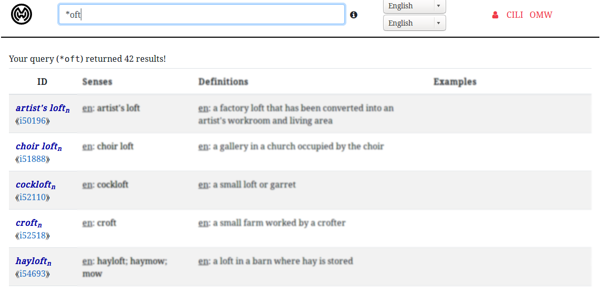
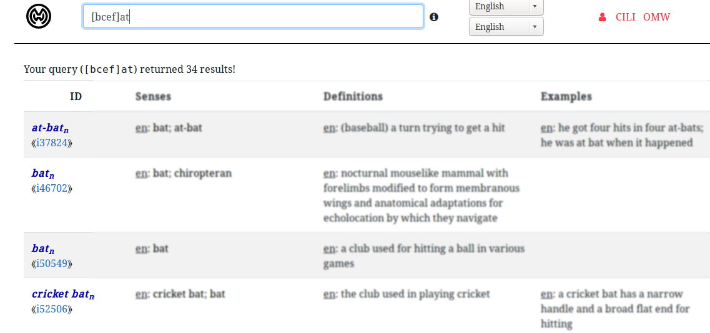
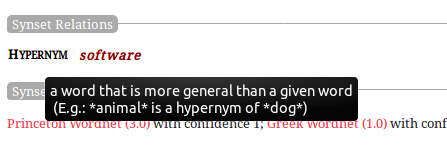
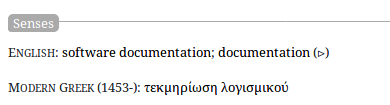
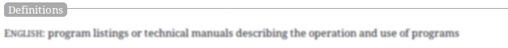
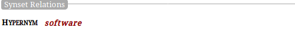

WordNet is a large, open-source, lexical database of English. Nouns, verbs, adjectives, and adverbs are grouped into sets of cognitive synonyms (synsets), each expressing a distinct concept. Synsets are interlinked utilizing conceptual-semantic and lexical relations.
Concepts are abstract ideas or general notions in our minds, we represent them as nodes in the OMW graph which are linked to synsets in individual wordnets.
The Basic Search function is used to search lemmas, it is present on the head of the concept page. A lemma is a word you find in the dictionary or wordnet. In the search function, there are two language select options, you can select the languages in which you want to search the word in the search bar. For eg: suppose you choose English and French then if you search for a word, it will search that word in both languages.
Glob patterns are used for file path expansion with the help of wildcard characters. Each wildcard character has it’s own use. Sets of filenames are specified accordingly to these wildcard characters. A wildcard pattern will be expanded into a list of pathnames that will be matching the given pattern.
| Glob pattern | Glob pattern description |
| * | It will match any character zero or more times. |
| ? | It will match any character one time |
| [xyz] | It will match any character specified in the square brackets. |
| [a-k] | It will match any character in the range specified inside the square brackets. |
*oft* will match anything which contains the string “oft” like softball, loft bombing, soft-show, etc.
oft* will match anything starting anything with “oft” like often, oftener, etc.
[ho?] will return hot, hop, hogg, hob, hoe, etc.
[?ot] It will return bot, dot, lot, etc.

For eg, [bcef]at will return bat, cat, eat, fat, etc.
For eg, [b-j]at will return bat, cat, hat, fat, cat, etc.
learn how to use the SQLite GLOB operator to determine whether a string matches a specific pattern.The concept pages contain graphical control elements that can be activated when the pointer hovers over a trigger area with the help of a mouse or some other device. For getting more information, hover the pointer over where you want more information. For eg, you want to know what does hypernym means, so you can just hover your pointer over hypernym.
For getting further information, you can click on hypernym, another tab will be opened after doing so.
The sense is relation to other expressions in the language system, it is one of the meanings of a lemma. Senses mean all the possible meanings of a lemma, here in this Senses section you can look at all the possible meanings of a lemma.
In the definitions section, you can see a statement of the exact meaning of a word.
Here you can look up for Part Holonym, Hypernym, Hyponym, Member Holonym, Domain topic, Instance Hyponym, and other synset relations.
The wordnets are all developed independently, The Open Multilingual Wordnet provides access to open wordnets in a variety of languages, all linked to a collaborative Interlingual Index.

omw/ili/concepts/ili_id
omw/concepts/ili/ili_id
omw/src/prj/ver/sysnet_id